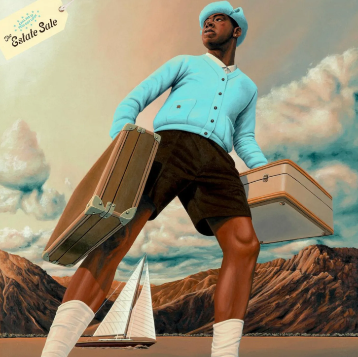
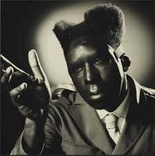

Tyler, The Creator is an American rapper, singer, songwriter, and record producer from Hawthorne, California. He is known for his unique style, creative music videos, and influential role in the alternative hip-hop scene.
TYLER, THE CREATOR ALBUMS:
GOBLIN (2011)
The first studio album by Tyler, The Creator, featuring dark themes and hits like "Yonkers" and "She."

GOBLIN - Tyler's Raw & Dark Debut
WOLF (2013)
The second studio album, more mature and introspective. Features storytelling elements and smooth production.

WOLF - A Cinematic, Personal Journey
CHERRY BOMB (2015)
Tyler's most experimental album, blending rock, jazz, and hip-hop in an unpredictable way.

CHERRY BOMB - Loud, Wild, and Unfiltered
FLOWER BOY (2017)
A turning point in Tyler's career—melodic, personal, and critically acclaimed.

FLOWER BOY - Emotional & Beautiful
IGOR (2019)
A Grammy-winning album blending R&B, funk, and soul, telling a story of love and heartbreak.

IGOR - Grammy-Winning Love Story
CALL ME IF YOU GET LOST (2021)
A nostalgic, well-crafted rap album with elements of storytelling and travel.

C.M.I.Y.G.L - Tyler in Peak Rap Form
CALL ME IF YOU GET LOST: THE ESTATE SALE (2023)
An extended edition of Tyler's 2021 album, featuring unreleased tracks and deep cuts.

THE ESTATE SALE - Hidden Gems & Unreleased Heat
CHROMAKOPIA (2024)
Tyler’s latest project, a mix of vibrant sounds and artistic evolution.

CHROMAKOPIA - Tyler’s Newest Sonic Adventure